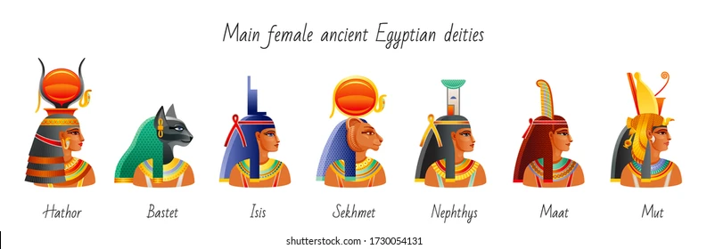

Les dieux et les déesses de l'Égypte ancienne faisaient partie intégrante de la vie quotidienne de la population.
Il n'est donc pas surprenant qu'il y ait eu plus de 2 000 divinités dans le panthéon égyptien.
Les noms de certaines de ces divinités sont bien connus : Isis, Osiris, Horus, Amon, Râ, Hathor, Bastet, Thot, Anubis et Ptah, mais beaucoup d'autres le sont moins.
Les dieux les plus célèbres sont devenus des divinités d'État tandis que d'autres étaient
associés à une région spécifique ou, dans certains cas, à un rituel ou à un rôle
La déesse Qébéhout, par exemple, est une divinité peu connue qui offrait de l'eau fraîche aux âmes
des morts dans l'attente du jugement dans l'au-delà, et Seshat était la déesse des mots écrits
et des mesures spécifiques, éclipsée par le plus célèbre Thot, dieu de l'écriture et patron des scribes.
La culture de l'Égypte ancienne se développa à partir de la compréhension de ces divinités
et du rôle vital qu'elles jouaient dans le voyage immortel de chaque être humain. L'historienne Margaret Bunson écrit:
Les nombreux dieux de l'Égypte étaient les points centraux des rites cultuels de la nation et des pratiques religieuses personnelles.
Ils jouaient également un rôle dans les grands rituels mortuaires et dans la croyance égyptienne en une félicité éternelle posthume. (98)
Les dieux évoluèrent d'un système de croyance animiste à un système hautement anthropomorphique et imprégné de magie
Heka était le dieu de la magie et de la médecine, mais il était aussi la force primordiale, antérieure à tous les autres dieux, qui
permettait l'acte de création et soutenait la vie mortelle et divine. La valeur centrale de la
culture égyptienne était ma'at - l'harmonie et l'équilibre - représentée par la déesse du même nom et sa plume d'autruche blanche
,et c'est Heka qui donnait du pouvoir à Ma'at comme à toutes les autres divinités. Heka était la manifestation de la heka (magie) qui doit
être comprise comme étant des lois naturelles qui seraient aujourd'hui considérées comme surnaturelles mais qui,
pour les Égyptiens, étaient simplement la façon dont le monde et l'univers fonctionnaient.
Les dieux offrirent aux gens de bons cadeaux, mais c'est le heka qui leur permit de le faire.
Ces dieux avaient tous des noms, des personnalités et des caractéristiques individuelles. Ils
portaient différents types de vêtements, considéraient différents objets comme sacrés,
présidaient à leurs propres domaines d'influence et réagissaient aux événements de manière très individualisée.
Chaque divinité avait son propre domaine d'expertise mais était souvent associée à plusieurs sphères de la vie humaine.
Hathor, par exemple, était une déesse de la musique, de la danse et de l'ivresse, mais elle
était également considérée comme une ancienne déesse mère, associée à la Voie lactée en
tant que reflet divin du Nil, et, dans son incarnation antérieure sous le nom de Sekhmet,
comme une destructrice. La déesse Neith était à l'origine une déesse de la guerre qui devint
l'incarnation de la déesse mère, une figure nourricière vers laquelle les dieux se tournaient
pour régler leurs différends. De nombreux dieux et déesses, comme Seth ou Serket, se transformèrent au fil du temps pour assumer d'autres rôles et responsabilités.
Les Égyptiens n'avaient aucun problème avec une multitude de dieux et ils mettaient rarement de côté les anciennes divinités en faveur de nouvelles.
Les caractéristiques et les rôles de divers dieux étaient syncrétisés pour concilier des croyances religieuses, des coutumes ou des idéaux différents. Pour des raisons politiques et religieuses,
par exemple, le dieu thébain Amon, qui était considéré comme la divinité la plus puissante du Nouvel Empire, fut uni à Râ, un dieu du soleil dont le culte remontait aux débuts de l'Égypte. Le culte des dieux égyptiens évolua au fil du temps,
de grands cultes se développant à l'échelle locale puis nationale. (99)